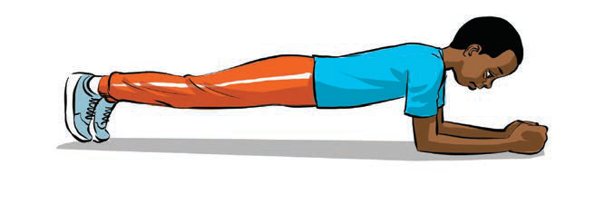

(d)Zoezi la kujiegemeza kwa mikono
Zoezi la kujiegemeza kwa mikono huimarisha misuli ya tumbo na mgongo, husaidia wachezaji kuwa na uthabiti wanapokimbia au kuruka.
Namna ya kufanya zoezi la kujiegemeza kwa mikono:
(i)
Lala kwa kuegemeza mwili kwenye mikono na vidole vya miguu;
(ii)
Hakikisha mwili umenyooka, usiache kiuno kiteremke au kupanda juu; na
(iii)
Dumu katika mkao huu kwa sekunde 30 hadi 60, kisha pumzika na kurudia mara 3 kwa kufuata hatua (i-ii) zilizoainishwa kama zinavyoonekana katika Kielelezo namba 4.
